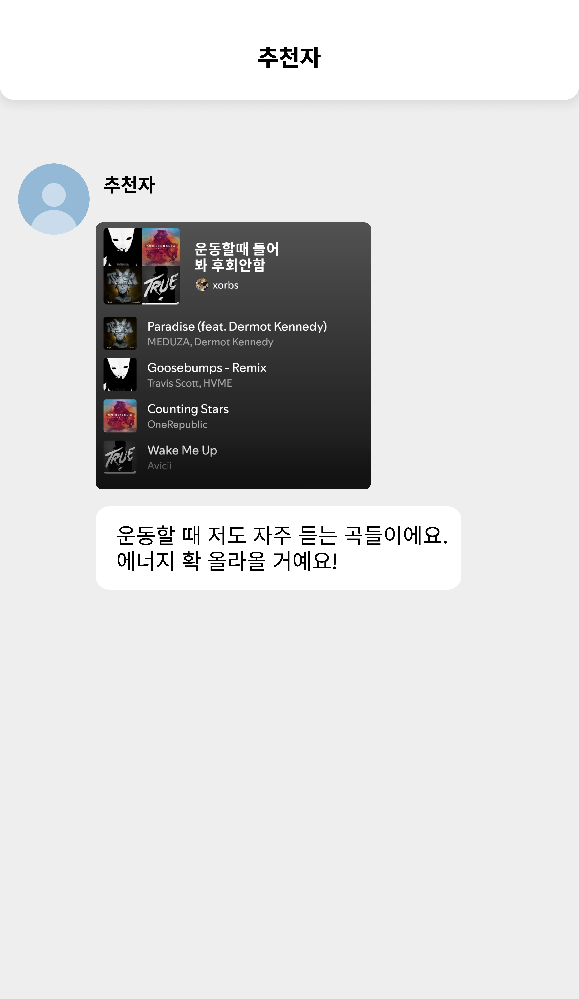
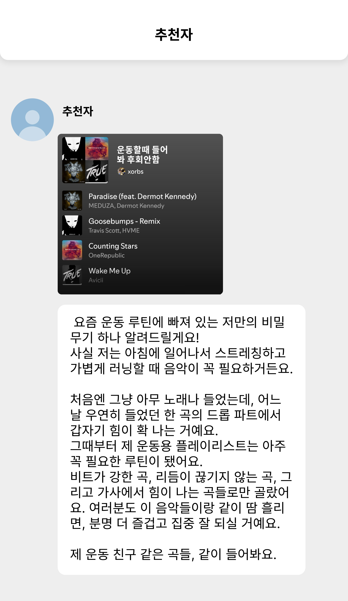
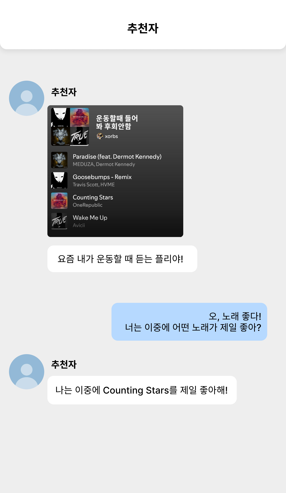
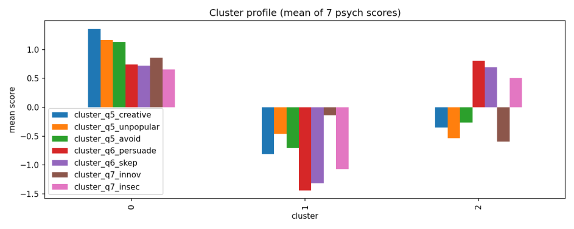

Parasocial relationship cues on user acceptance of AI music recommendation services: A conjoint analysis [in Korean]
Information Society & Media, 27(1), 1–51
What makes a music recommender feel worth listening to?
Music recommendation is also a social encounter: people respond to who appears to be recommending, what they have in common, and whether a conversation is possible. Drawing on parasocial relationship theory, this study examines how these cues shape preferences for music recommendation services that feature human or AI recommenders.
I framed the research question and chose the five features to vary in the conjoint experiment, including who recommended the music and whether listeners could talk with the recommender. I analyzed the choices, compared preferences across three listener groups, and wrote the manuscript.
We conducted a choice-based conjoint experiment with 300 online panel participants in South Korea, with 100 participants each in their 20s, 30s, and 40s. Service profiles varied five attributes: recommender identity (authenticity), similarity to the user (homophily), amount of information, communication availability, and price. Mixed logit models estimated preference trade-offs. We also compared three user groups derived from attitudes toward uniqueness, advertising, and technology.
Original Korean-language stimulus examples illustrating brief information, detailed information, and communication availability. These were materials for a hypothetical service; the dialogue shown is scripted stimulus content, not a participant conversation.



Similarity (26.8%) and communication (25.3%) had the highest relative importance among the four non-price attributes, followed closely by informativeness (24.0%) and authenticity (23.9%). Shared hobbies or generation were preferred to shared values, and communication availability was positively valued. Brief information had higher estimated utility than detailed information. A human celebrity was preferred to a fictional-character AI; a celebrity-trained AI did not show a statistically significant advantage over the fictional-character AI at the 5% level. Higher prices reduced choice probability. Price was excluded from this relative-importance comparison.
Participants were segmented using psychological and attitudinal profiles. Critical Explorers (Cluster 0) scored relatively high across all seven dimensions, combining a desire for distinctive choices with advertising skepticism and both technological innovativeness and insecurity. They prioritized communication. Passive Pragmatists (Cluster 1) scored relatively low across the dimensions and placed the most weight on information and similarity. Cautious Acceptors (Cluster 2) combined high persuasion knowledge, advertising skepticism, and technological insecurity with low innovativeness. They prioritized similarity and preferred human recommenders to both AI types. These segments describe patterns within this sample, rather than fixed categories of users.

The findings suggest making interaction available, offering concise explanations, and using concrete cues of shared interests when designing music recommendation services. They also caution against assuming that a more humanlike AI or a longer explanation will appeal to everyone. These are design implications drawn from stated preferences; they were not tested as improvements to a deployed service.
Participants chose between hypothetical service profiles rather than using a live recommendation system. The findings therefore describe stated preferences, not listening behavior or long-term adoption. The Korean sample limits generalization, and the choice analysis does not establish the psychological mechanisms behind these preferences.
Summary based on the full manuscript, cross-checked against the typeset article. Public research record.
Information Society & Media, 27(1), 1–51